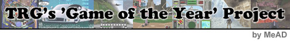

|  Expect a little
present this year from The Reviewers Guild. >>>If you subscribe to any gaming magazines, you already know what to expect, as most magazines seem compelled to give out some sort of awards around this time of year. TRG is dividing the selection process into categories, including: Sports, RPG, and Action. A single game will be selected as the year's best form each category. >>>No one knows for sure yet if prizes will be awarded to the release group responsible for the game, but TRG will do everything it can to make sure that a game's merit, and not group politics, determines the winner. >>>TRG has picked an
interesting means of selection for the contest. >>>The system is designed so that everyone gets to vote just once for their favorite game, because email addresses will be recorded with ballots. The email address for sending in ballots (in case anyone wants to know ahead of time) will be trguild@hotmail.com. If you have any questions about the Games of the Year project just send a letter to the same address, or stop by #TRG on EFNet. >>>Anxious to find out
which game is going to take the title of Game of the Year in its category?
FKrueger, leader of TRG, offers his favorites: >>>TRG is also planing
to begin releasing monthly reports on the scene sometime in the near future. TRG
has tried to fill the void left by The Paki Reports before, so the idea is
nothing new, but the reliability of the release dates may be. FKrueger said that
TRG has >>>Innovation and consistency are hard to mix, but TRG's track record indicates that its got a good chance. Expect more from TRG and its outstanding members in the future. links Visit TRG's homepage: http://trguild.ml.org
|